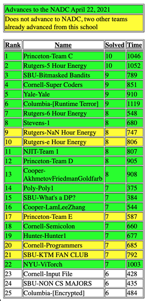

The Stony Brook University ICPC team Bitmasked Bandits placed third in the
2020 ICPC Greater NY Regional Competition, finishing behind Princeton and Rutgers but ahead of all other teams including those from Yale, Cornell, Columbia, and NYU!
The Regional took place under special circumstances due to the pandemic. It was delayed from mid-November to the 7th of March (which gave us additional time to train), and was moved to an exclusively online format. As usual, however, the contest lasted for a grueling five hours of intense problem solving. In the end, two of our teams, Bitmasked Bandits and What’s a DP? advanced to the 2021 ICPC North America Division Championship.
The contest, however, was not without hiccups. One notorious problem, H, was unsuccessfully attempted by most teams. From the live scoreboard, everybody was aware that others had not been able to solve the problem, yet, upon reading, it appeared to be a straightforward implementation problem that one knew one ought to be able to solve! Several days after the end of the contest, the judges ruled that the problem was tested on faulty data, causing an overhaul of the rank-list. Two of our teams were retroactively awarded credit, and this propelled Bitmasked Bandits from seventh to third place!
One more observation from the scoreboard: Problem F was a crux problem solved exactly by the top seven teams. Solving this problem was the key to breaking into the top of the scoreboard – a feat accomplished by Bitmasked Bandits.
The final standings were as follows:

Congratulations to Bitmasked Bandits (Andrew Burford, Kenny Zhang, and Michael Wolf-Sonkin) and What’s a DP? (Greg Zborovsky, Leheng Lu, Srdjan Bozin) for advancing to the 2021 ICPC North America Division Championship (NADC)!
Our third team KTM FAN CLUB (Daniel Wu, Ian Peitzsch, Yang Yang) did not move to the next round simply because no more than two teams per school were allowed to compete in the NADC. Our fourth team NON CS MAJORS consisted of students from Math/AMS and Physics only (Calvin Aw, Jade Nine, Saajid Chowdhury) and was ranked ahead of thirty of the fifty-five teams consisting mostly of CS students!
Stony Brook University teams were formed and trained by the student-run club SBU Competitive Programming Club (short: CompProg). CompProg trains and prepares students for competitive programming and job interviews throughout the year. The coaches (including the faculty advisor Professor Rezaul A. Chowdhury) are veteran programming contestants with colorful track records in competitive programming contests. A short introduction to the club can be found in the following link: https://youtu.be/CMI8mFr9zco.
Bitmasked Bandits (formerly known as SBU-Team-2) has also participated in 2019 ICPC Greater NY Regional Competition and has been preparing throughout the last year. In the Annual CompProg individual selection Contest all three members of the team managed to be in the top 4!
Here’s what the members of Bitmaskek Bandits had to say about their experience:
Andrew:
The regional contest was a super exciting experience. The pressure of real competition really makes things fun. Last year, I had a really awesome experience at the regional competition and it inspired me to start doing serious training for this year. My teammates were equally motivated to get together every week for practice contests, and we improved together throughout the summer. We developed a strong sense of camaraderie that not only helps us work efficiently but also makes solving problems together a real joy.
Kenny:
Preparing for the regional contest was a lot of fun. I encountered many clever problems and algorithms while solving problems with my teammates. I really enjoyed discussing our solutions after all the practice contests and the regional, helping people out on problems I solved, and learning from others on problems I didn't.
Between last year and this year, I had more practice with algorithmic problem solving, and I learnt more useful algorithms. I got better at recognizing what algorithms could be applied to which problems. There was one really memorable problem where I found a solution involving binary searching for a maximum flow, it was super neat how the two algorithms interacted with each other. In the end, this year's worth of experience gave me more tools in my problem solving belt, and I'm looking forward to tackling more interesting problems in the future.
Mike:
My participation with ProgComp was absolutely the most impactful and enlightening academic activity throughout my college experience. I was given the opportunity to work with and learn from enthusiastic students and mentors. Every week, we participated in increasingly difficult programming contests. We weren't just practicing coding, we were learning how to look at problems differently. We sharpened our problem solving skills while learning algorithmic design and techniques. What made me love this team was the joy and excitement I found in the efficient, yet elegant solutions we learned to create. This community of passionate individuals pushed me to new limits and inspired me to further my education into graduate school.